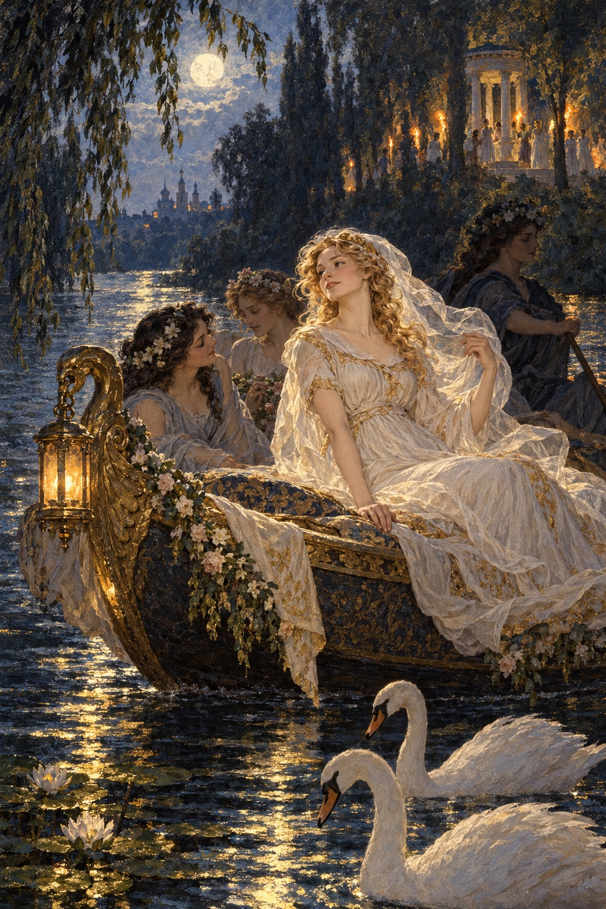

Ivan Turgenev · First Love
제11장
그날 저녁에도
자세킨네 집에
늘 오던 손님들이 모였다.
나도 그 자리에 있었다.
마이다노프의 시 이야기가 나왔다.
지나이다는 진심으로 칭찬했다.
“그런데 말이에요.”
그녀가 시인에게 말했다.
“제가 시인이라면
다른 소재를 쓸 거예요.
어리석은 생각일 수도 있지만
가끔 이상한 장면이 떠올라요.
특히 새벽에 잠이 안 와서
하늘이 분홍빛과 잿빛으로
바뀌는 걸 볼 때요.
예를 들면 이런 거예요.
웃지 않으실 거죠?”
“안 웃어요, 안 웃어요!”
우리 모두가
한목소리로 말했다.
지나이다는 팔짱을 끼고
먼 곳을 바라보았다.
“큰 배 한 척에
젊은 여자들이 여럿 타고 있어요.
밤이고,
강물은 고요해요.
달빛이 비치지요.
여자들은 모두
흰옷을 입고
흰 꽃으로 엮은 화관을 썼어요.
그리고 찬송가 같은 노래를
부르는 거예요.”

“알겠습니다.
계속하세요.”
마이다노프가
꿈꾸듯 진지하게 말했다.
“그런데 갑자기 강가에서
떠들썩한 소리가 나요.
웃음, 횃불, 북소리.
바쿠스의 여신도들이
노래하고 소리치며
달려오는 거예요.
여기서부터는
시인님이 그려 주세요.”
그녀는 곧
자신의 그림을 더했다.
“횃불은 붉고
연기는 아주 많이 났으면 해요.
어두운 화관 아래로
여신도들의 눈이 빛나야 해요.
호랑이 가죽과 술잔도,
황금도 잊지 마세요.
황금은 아주 많이요.”
“황금은 어디에 있어야 합니까?”
마이다노프가
축 늘어진 머리칼을 넘기고
콧구멍을 벌름거리며 물었다.
“어디든요.
어깨에도,
팔에도,
다리에도요.
옛날 여자들은 발목에도
금고리를 찼다잖아요.
여신도들이 배의 여자들을
부르는 거예요.”
“배에 탄 여자들은
노래를 멈춰요.
더는 부를 수가 없어요.
하지만 움직이지도 않지요.
강물이 그들을
강가로 실어 가요.
그때 여자 하나가
조용히 일어나요.”
그녀의 목소리가
더욱 또렷해졌다.
“달빛 속에서
천천히 일어서는 모습과
친구들이 겁내는 모습을
잘 써야 해요.
그 여자가 뱃전을 넘어가면
여신도들이 둘러싸고
밤의 어둠 속으로
데려가 버리지요.”
“연기가 뭉게뭉게 피고
모든 것이 뒤섞여요.
여자들의 비명만 들리고,
강가에는 그 여자의 화관만
남아 있어요.”
지나이다가 입을 다물었다.
‘아, 그녀가 사랑에 빠졌어.’
나는 다시 생각했다.
“그게 전부입니까?”
마이다노프가 물었다.
“전부예요.”
“한 편의 긴 시를 쓰기에는
부족하군요.”
그가 근엄하게 말했다.
“하지만 짧은 서정시에는
그 생각을 쓸 수 있겠습니다.”
“낭만적인 시로요?”
말렙스키가 물었다.
“물론이지요.
바이런풍으로요.”
“제 생각에는
위고가 바이런보다 낫습니다.”
젊은 백작이
대수롭지 않게 말했다.
“더 재미있지요.”
“위고는 뛰어난 작가입니다.”
마이다노프가 답했다.
“제 친구 톤코셰예프도
스페인 소설 《엘 트로바도르》에서….”
“아, 물음표가
거꾸로 찍힌 책인가요?”
지나이다가 말을 잘랐다.
“그렇습니다.
스페인에서는 그렇게 쓰지요.
제 말은 톤코셰예프가….”
“또 고전주의와 낭만주의로
다투시려는 거죠?”
지나이다가 다시 끊었다.
“차라리 놀이를 해요.”
“벌칙 놀이요?”
루신이 물었다.
“아뇨, 그건 지겨워요.
비유 놀이를 해요.”
지나이다가 만든 놀이였다.
사물 하나를 정해
저마다 다른 것에 빗댔다.
가장 좋은 비유를 한 사람이
상을 받았다.
지나이다가 창가로 갔다.
해가 막 진 참이었다.
하늘 높이
길고 붉은 구름이 걸렸다.
“저 구름은
무엇을 닮았나요?”
그녀는 대답을 기다리지 않았다.
“제 눈에는
클레오파트라가 안토니우스를
만나러 갈 때 탔다는
황금 배의 진홍빛 돛 같아요.
마이다노프 씨,
얼마 전에 제게
이야기해 주셨잖아요.”
우리는 모두
《햄릿》의 폴로니우스처럼
맞장구를 쳤다.
구름은 분명 그 돛을 닮았고,
더 나은 비유는
찾을 수 없다고 했다.
“그때 안토니우스는
몇 살이었나요?”
지나이다가 물었다.
“당연히 젊었겠지요.”
말렙스키가 말했다.
“네, 젊었을 겁니다.”
마이다노프도 장담했다.
“잠깐만요.”
루신이 외쳤다.
“마흔이 넘었습니다.”
“마흔이 넘었군요.”
지나이다가 되풀이했다.
그녀는 루신을
재빨리 쳐다보았다.
나는 곧 집으로 돌아왔다.
‘그녀가 사랑에 빠졌어.
그런데 누구를?’
나도 모르게
입술이 그 말을 속삭였다.